口碑神话
9.3分
豆瓣评分从开分9.0一路攀升至9.3，近十年国产剧情片口碑标杆，超76万观众打出五星好评。
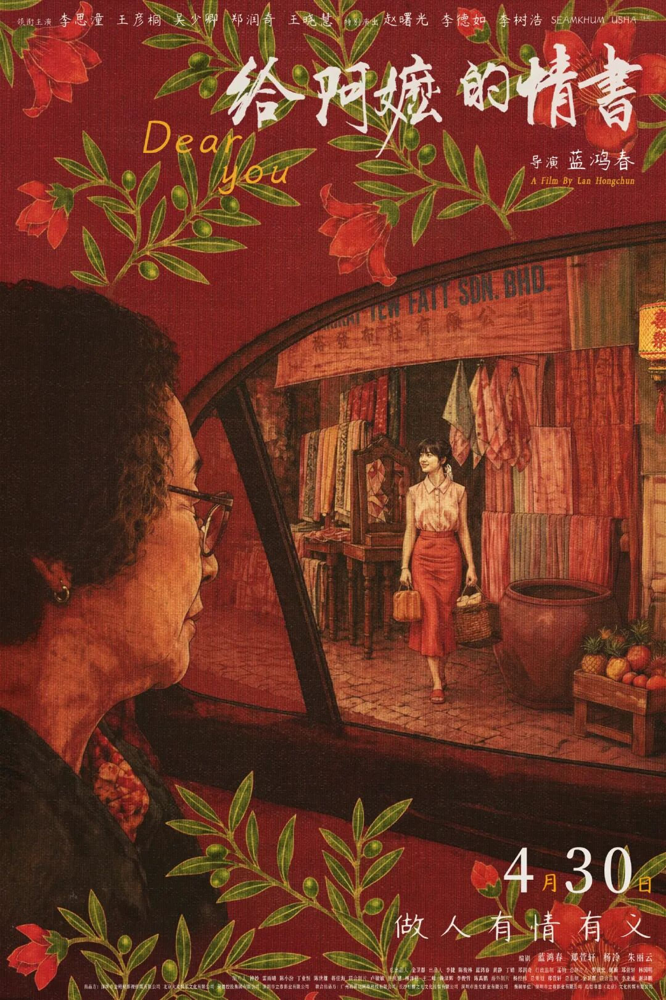
一纸侨批，寄托半生牵挂 —— 跨越山海的岁月情书
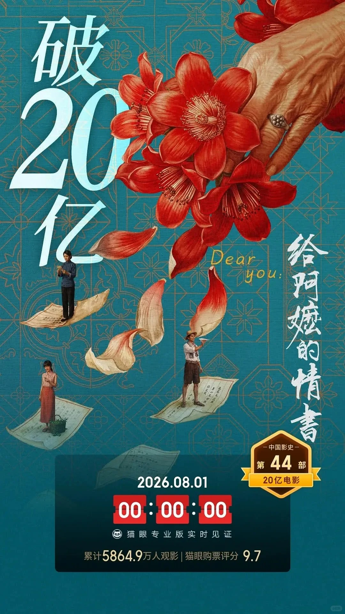
首日排片仅 1.6%，最终票房破 20 亿 —— 一部没有流量明星、全程潮汕方言的小成本电影，用最笨的办法走完了这条几乎不可能的曲线。
破圈豆瓣评分从开分9.0一路攀升至9.3，近十年国产剧情片口碑标杆，超76万观众打出五星好评。
制作成本仅1400万元，却斩获超20亿票房，投资回报率超140倍，书写小成本电影的奇迹。
首日排片仅1.6%，连续12天上座率第一，排片一路飙升至68.7%，单日票房占比一度高达78.3%。
内地观影人次达5864.9万，平均票价34元为年度前十最低，用真诚打动每一位观众。
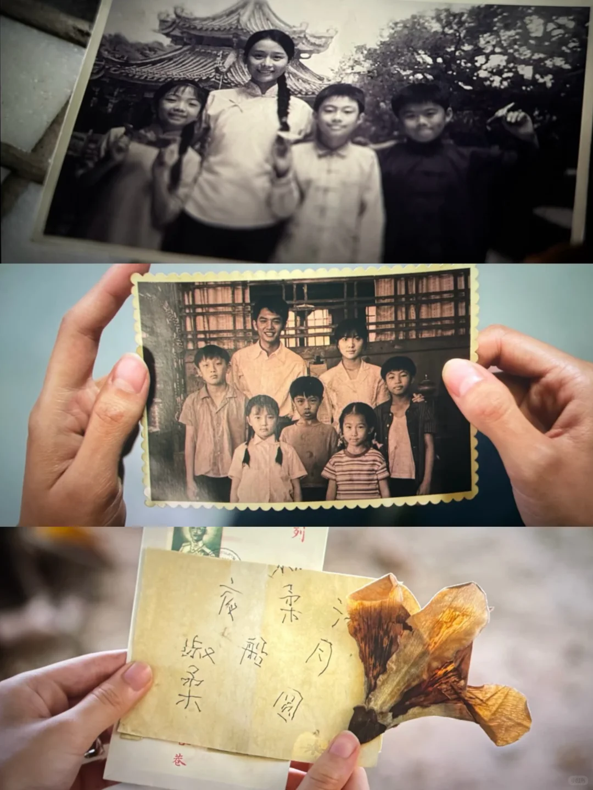
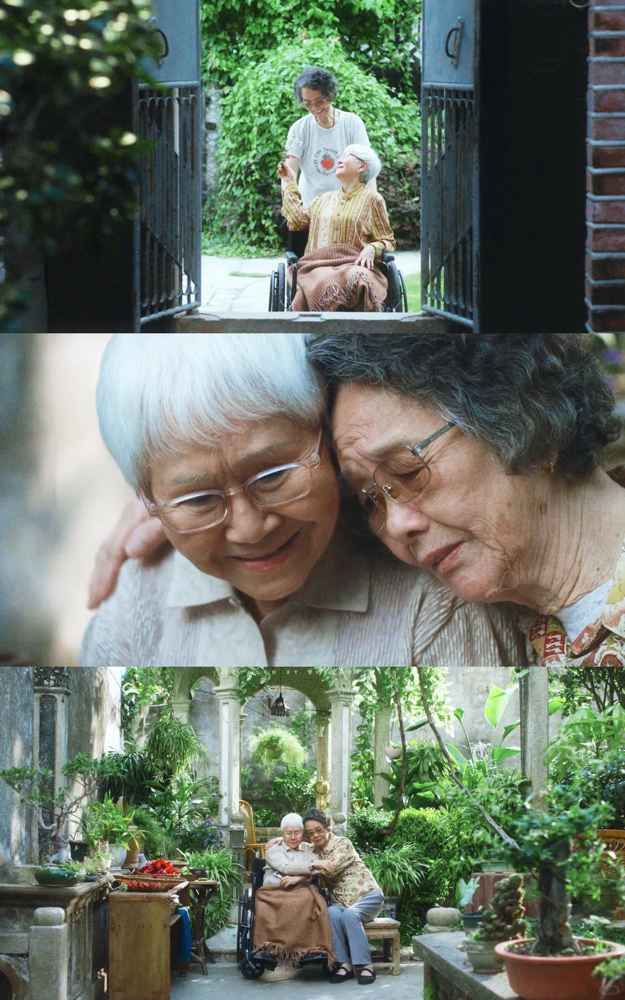
导演蓝鸿春用了整整十年，从纪录片《四海潮味》中采集近300个海外华人家庭的故事，再到一年调研、一年写作的1:1创作节奏，最终将‘侨批’这一世界记忆遗产，转化为银幕上跨越山海的深情。
他说：‘我们一直反问自己，现在写的桥段、讲的故事是不是从心而发，如果是从心而发打动了自己，它基本上没有违背整个创作的第一原则。’
于是，95%的潮汕方言没有成为壁垒，反而让工夫茶的氤氲、老厝天井的雨声、英歌舞的鼓点，都成了全人类共通的情感载体——信义、坚守与善良，从来不分国界与方言。
这封情书，写给阿嬷，写给侨批，也写给每一个在快节奏时代里，依然相信‘慢慢来’的人。
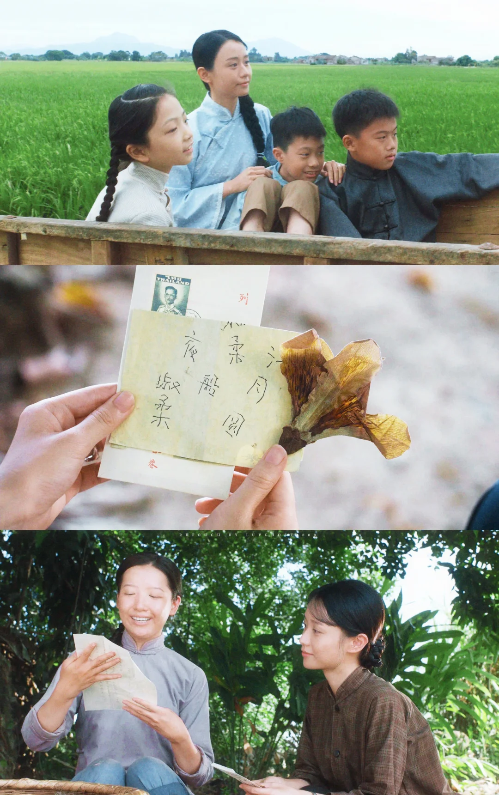
二十世纪初，潮汕先辈为了生计乘坐红头船远赴南洋。这是一部充满血泪的迁徙史。「侨批」成为维系无数家庭的唯一纽带。一封侨批，往往要经过数月甚至半年的海上颠簸才能到达。它不仅是汇款单，更是漂泊者的魂魄，是故乡亲人的期盼。
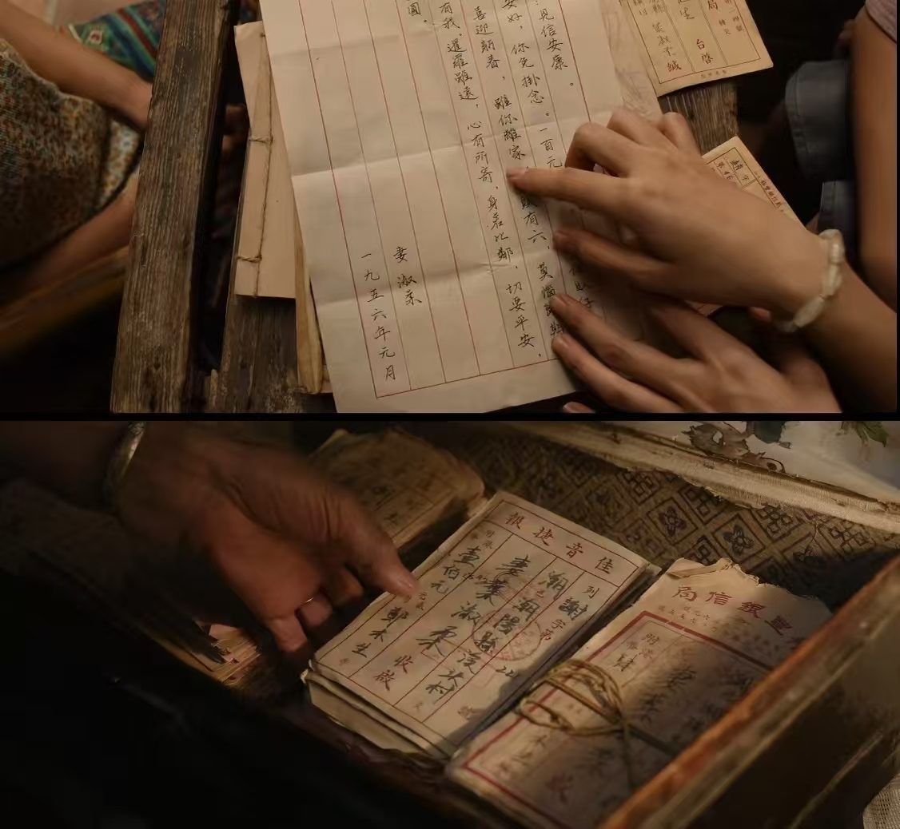
电影以现代孙女整理遗物为切入点，轻轻推开那扇尘封半个世纪的岁月之门。没有惊天动地的传奇，只有一封封泛黄的侨批，串联起阿嬷叶淑柔与阿公郑木生跨越山海的生死守望。
那是写信与等待的岁月。从红头船远航的离别，到老厝天井里的孤独守候。这条线扎实饱满，用克制的镜头打磨出整部影片最沉重的分量。
那是解构与重塑的年代。年轻一辈从漠不关心，到在旧木匣中发现泛黄信纸，完成对家族根脉的确认，让尘封往事重新拥有了温度。
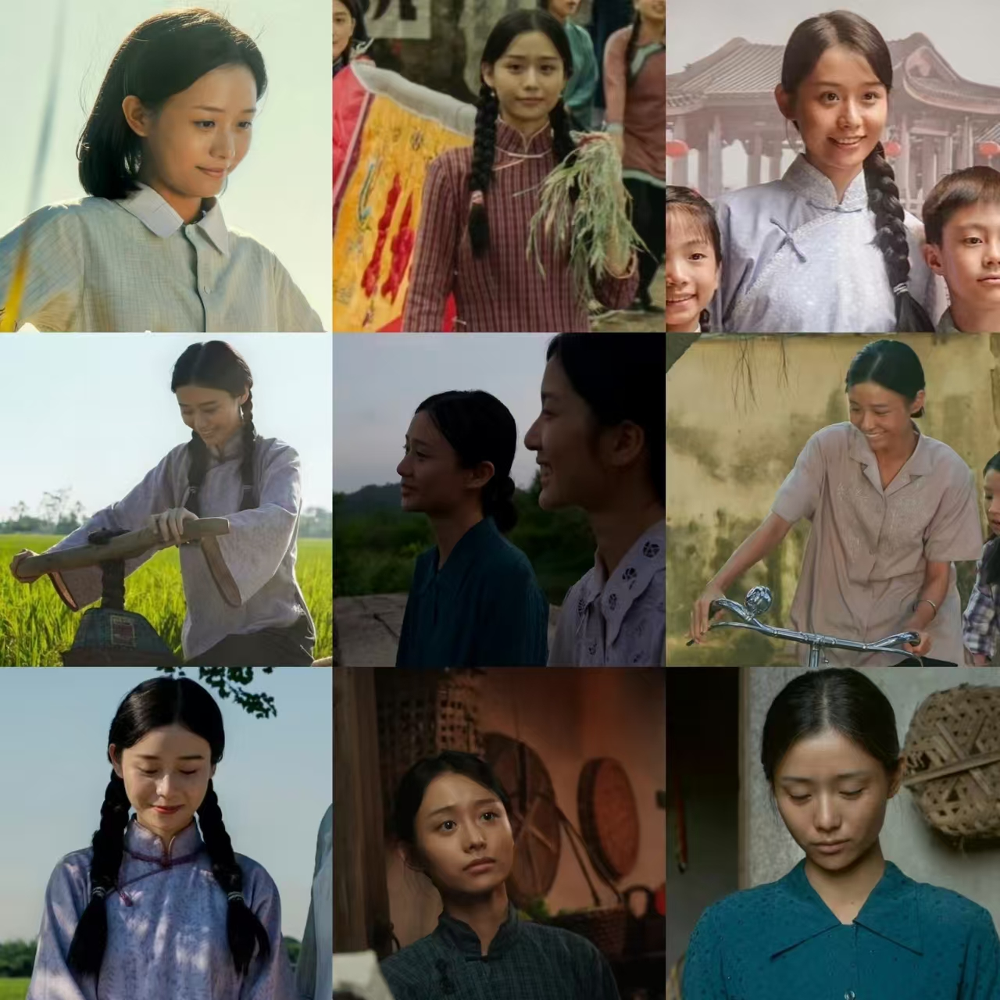
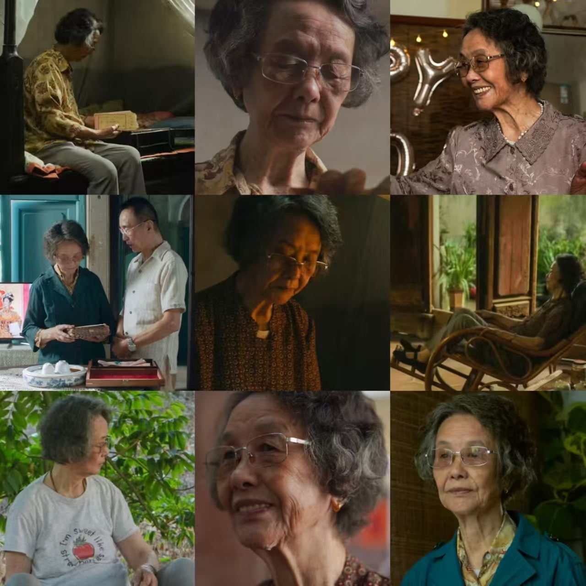
柔肩担道义
—— 被时代辜负的潮汕女性
17岁那年，她为爱情义无反顾地私奔。丈夫为逃避抓壮丁远赴南洋，留下她一人拉扯三个孩子。她将南洋寄回的饼干、咸猪肉分给乡亲，在漫长的等待中守着‘春天’的承诺。
1960年，丈夫在异国离世，年仅32岁的她被善意地瞒了整整十八年。1978年，一封丢失的信件让她误以为丈夫另娶，她选择体面地搬家、切断联系——不是因为不爱，而是因为她骨子里的‘犟’。
从青丝到白发，她守候了一个或许从未被回答的问题：这究竟是被歌颂的深情，还是时代最温柔的牢笼？
她的一生，是一场被善意包裹的漫长等待。
核心人物 Ⅱ · 南洋潮汕女性群像缩影
—— 以信义扛起两个家庭的南洋女儿
她是泰国长大的侨二代，最初不愿收留素不相识的郑木生。然而在郑木生创办华文课堂的影响下，她开始学习母语汉字；在旅馆失火时，她亲眼看到郑木生不顾一切救出自己的父亲。从那一刻起，这个倔强的南洋姑娘，开始理解了什么是「有情有义」。
1960年，郑木生客死异乡。谢南枝做了一个改变一生的决定——她隐瞒死讯，模仿木生的字迹，以他的名义代写侨批，一写就是整整十八年。十八年里，她寄钱、寄物、寄腊肉、寄单车，省吃俭用积攒钱财，把对一个陌生女人及其家庭的责任，悄悄扛在自己肩上。她终身未嫁，在异乡教书，从文盲成长为中文教师，捐建了「木生小学」。
晚年的南枝罹患阿尔茨海默症。面对千里奔赴而来的淑柔，她说「我老了，什么都记不得了」。可当她轻轻问出「淑柔姐，我上次寄给你的咸猪肉，好吃吗？」时，所有人才明白——她不是记不得，而是太善良。最顶级的善意，不是付出之后四处宣扬，而是倾尽所有帮过你，却亲手抹去所有痕迹，让你毫无负担地往前走。
CHARACTER ARC
她不是记不得，只是不想让你亏欠。
核心人物 Ⅲ · 万千南洋华侨的缩影
—— 有情有义的下南洋番客
他本是潮汕乡下的贫苦青年，与地主家小姐叶淑柔相爱私奔。1948年，为躲避抓壮丁，他含泪告别妻儿，独自踏上红头船远赴南洋。他在马来西亚锡矿场做苦力，在暹罗蹬三轮车，把每一分血汗钱都寄回“唐山”。他创办中文培训班，教当地华人孩童潮汕话和汉字，用最朴素的方式守护着文化的根脉。
他并不完美——冲动、讲义气、有时甚至显得有些“笨”。但正是这份“笨拙”的善良，让他格外真实。他因救火入狱，却在狱中一遍遍讲述妻儿的故事；他因见义勇为而离世，生命永远定格在异乡的湄南河。
他欠妻子一个白头偕老，欠孩子一个父亲的位置，却从未欠过任何人一份情义。他用最朴素的良知，在异国他乡践行了潮汕人“有情有义”的品格。

CHARACTER ARC
他欠妻子一个白头偕老，却从未欠过任何人一份情义。
赏析 II · 情义与守望
—— 一纸侨批，半部温柔 · 超越爱情的人间大爱
电影虽然叫作《给阿嬷的情书》，但爱情所占篇幅并不多。它要讲的，是‘乡情、爱情、友情、恩情、生死情’交织的人间大爱。两个素未谋面的女人，因一纸侨批而彼此守望。南枝在木生离世后，模仿他的笔迹给远在潮汕的淑柔写了整整十八年的信，寄钱、寄物、寄腊肉、寄单车，把对一个陌生女人及其家庭的责任，悄悄扛在自己肩上。
南枝的每一封信，都渐渐渗入她自己的温度。她会由衷欣赏淑柔独自赶跑小偷的孤勇，写下‘谁言女子肩膀不够伟岸，为母则刚，恰似你的样子’；她会压一朵火红的木棉花在信笺里，让花香跨海而来。木生一辈子说不出口的话——‘暹罗没有春天，你就是我的春天’，借了一个陌生女孩的手，穿越千里山海，抵达了淑柔。
这才是‘女性帮助女性’最朴素的模样。她们的联结，不是为了争夺某个资源，也不是为了集结起来共同对抗某个符号。她们只是在各自崎岖的命运里，选择成为有担当、有情义的人，然后互相辨认，彼此托底。这是一种‘东方情感美学’——极致克制，却后劲绵长。
NARRATIVE CORE
这才是‘女性帮助女性’最朴素的模样。
深度赏析 III · 表演伦理
—— 素人的「降维打击」
真正动人的表演，往往发生在剧本之外。导演蓝鸿春把七成以上的时间花在选角上——他要的不是「会演戏的人」，而是「本身就活在那片土地上的人」。
李思潼提前三个月住进泉州老街区，练毛笔字、学潮汕书面语，片中每一封侨批皆由她亲笔落墨；王彦桐为贴近郑木生剃寸头、晒黑肤色，在码头体验搬运工的重体力生活——他们不是在「演」角色，而是让角色在自己身上重新活过一次。
李少红的评语是「非虚构的纪录片风格，毫无表演痕迹，一切都恰到好处」。表演的最高伦理，恰恰是让人忘记表演。
NOT IN THE SCRIPT · 现场即兴
「一大群孩子，你走这么早，孩子们怎么办？」
—— 吴少卿 · 饰 老年叶淑柔｜这句不在剧本里的话，被完整保留在了成片中。
深度赏析 IV · 地域与普遍
全片 95% 的台词使用潮汕方言。工夫茶、老厝天井、英歌舞、侨批——这些高度地域性的符号，在银幕上并没有成为门槛，反而成了通往共通情感的路径。
因为它们说的不是「潮汕的特殊」，而是离别、守候与牵挂这些所有人都懂的事。
导演蓝鸿春说：「潮汕文化是载体，乡愁、情义与亲情是内核。这是所有人共通的情感，即便听不懂潮汕话，也能被故事触动。」
GLOBAL RESONANCE · 跨越山海的共鸣
新加坡 · 首周上座率 93%，登顶单周票房冠军
法国 · 《世界报》评「根植于中国传统价值观」
全球 · 海外票房突破 1 亿人民币
真正的地方性，恰恰通向最深刻的普遍性。
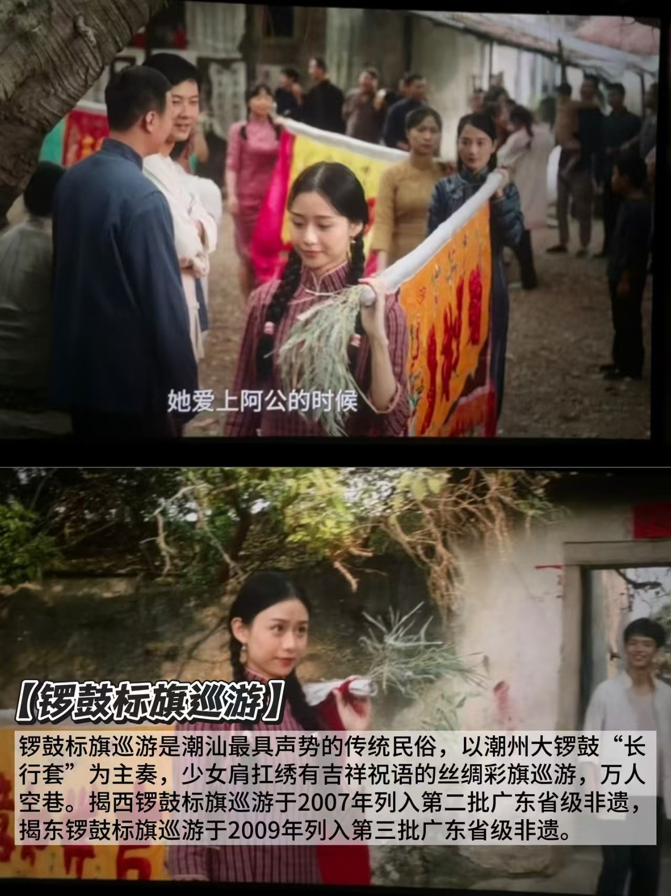
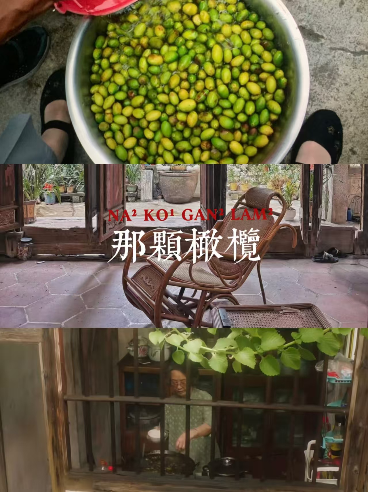
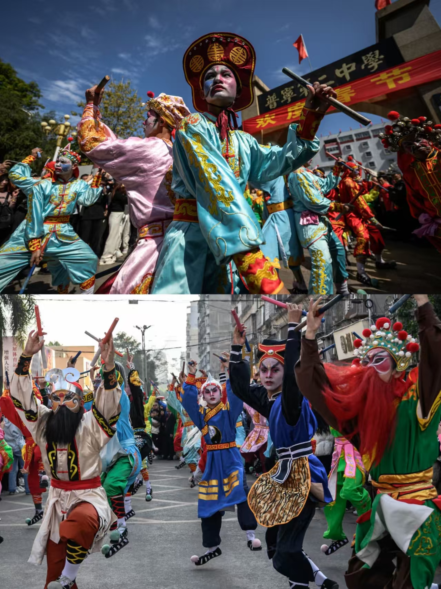
深度赏析 V · 文学之美
—— 当千年诗心，在一纸侨批里重新活了过来
影片中的侨批，继承了中国古典诗论中「兴」的手法——先言他物以引起所咏之辞。明明想说「我想你」，却落笔成「江上升明月，圆如玉坠」。这不是逃避，而是最深切的情感不宜直说，说出来反而轻了。正如河北大学文学院教授李俊勇所言：「有了寄托，才能言有尽而意无穷，才可以反复形容摹写，意韵悠长的感觉就出来了。」
那些被细心封存的木棉花瓣，那些「冬至丸亦留你一份」的家常叮咛，那些「你免挂念」的温婉收束——每一封信都不是冰冷的文字，而是一颗心跨越山海的跳动。电影用这些书信告诉我们：最深的情，从来不需要大声说出来。
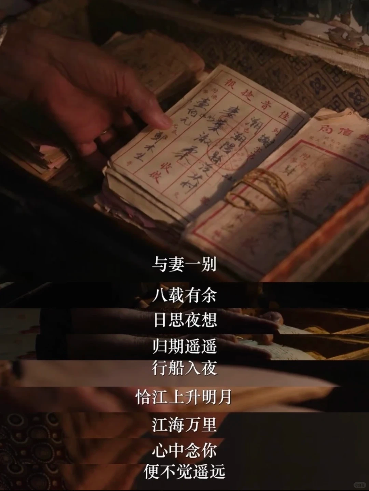
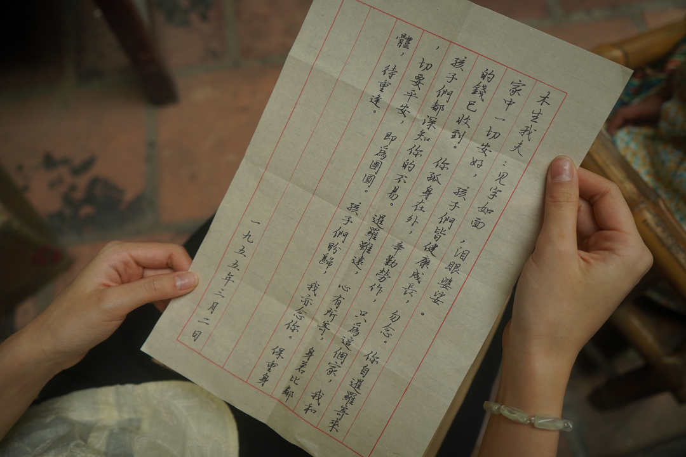
MASTERPIECE · 全片最动人书信
「行船入夜，恰江上升明月，似与你并肩共赏。江海万里，心中念你，便不觉遥远。」
「暹罗没有春天，一想到你……你就是我的春天。」
「谁言女子肩膀不够伟岸，为母则刚，恰似你的样子。」
—— 摘自《给阿嬷的情书》侨批原文
深度影评 I · 历史与虚构
—— 「两头家」的普遍模式与电影的温情改写
电影的选择：把‘二房’改写为‘无血缘的代笔友人’。
历史的真相：学者庄国土研究显示，过半潮汕华侨在南洋另娶，形成公开二房。
木生的处境：坚守原配、只写信不另娶的男性，当时几乎无法立足。
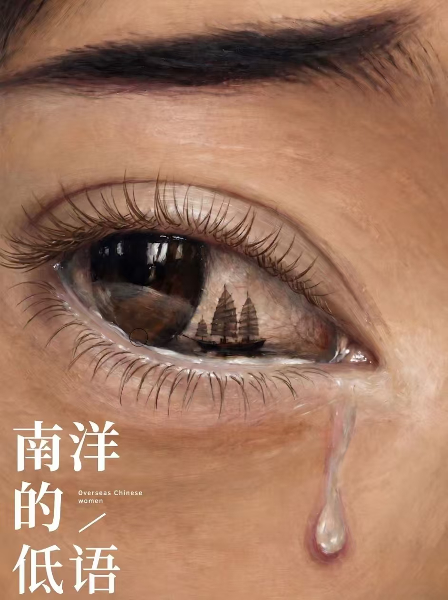
KEY INSIGHT · 核心洞察
「电影用一个虚构的道德完人，替换了一整个群体的真实面貌。」
这并非是对电影的否定，而是对历史的尊重。理解了这份被省略的复杂性，才真正读懂了那一代华侨的沉默。
深度影评 Ⅱ · 结构之困
—— 当结构性苦难被改写成浪漫选择
电影的改写：把‘二房’换成‘无血缘的代笔友人’，本身就是一个文化信号。
真实的代价：番客婶的‘守’不是风骨，而是宗族礼教、经济依附与信息剥夺下的别无选择。
叙事的遮蔽：用‘她选择了守’替代‘她根本没得选’，是对一代女性结构性困境的温柔遮蔽。
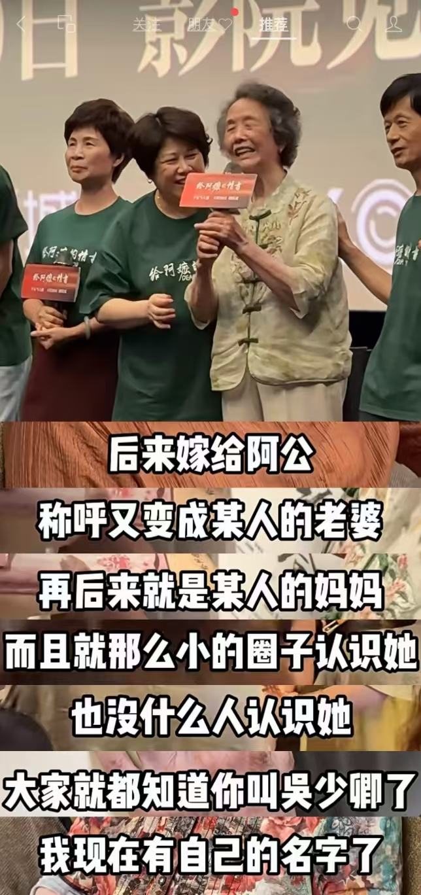
KEY INSIGHT · 核心洞察
「电影用『她选择了守』，替代了『她根本没得选』。」
‘没得选’被讲成‘选择了守’，是叙事对历史最温柔的背叛。
深度赏析 VI · 视听语言
—— 乡土根性与纪实美学
影片摒弃了商业电影惯用的华丽镜头与强戏剧冲突，以近乎纪录片式的克制，将质朴平实的影像、鲜活真实的人物、平淡自然的叙事融为一体。全片大量使用自然光与安静的长镜头，老厝天井的午后光影、厨房里一口凉掉的锅、雨落在檐下的弧线——摄影机几乎从不催促人物，让情绪在时间里慢慢沉淀。
声音设计同样克制——大量留白，只有雨声、锅铲声、翻纸声。方言原声不做配音，让语调本身成为年代的一部分。同时，影片大量采用框架式构图，门框、窗户、柜台不断将人物框置于画面中，像是被束缚的人生。那个年代的人，习惯把情绪深埋于沉默之中，所以情感不是扑面而来的，而是从缝隙里缓缓溢出，克制、压抑，却后劲十足。
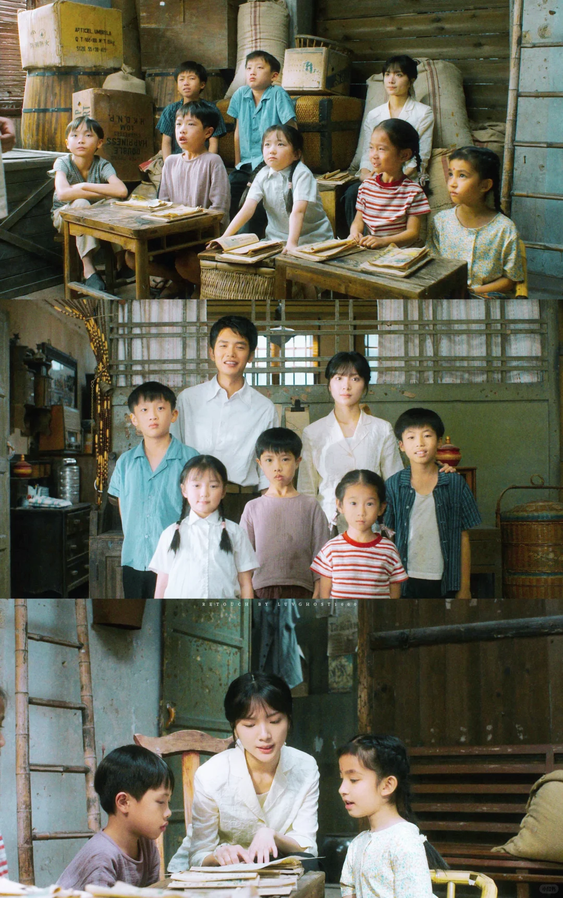
AESTHETIC · 美学洞察
「它摒弃华丽镜头，以质朴平实的影像，仅凭故事自身的力量便打动了万千观众。」
大巧不工，至情无相——这是中国电影现实主义创作传统的一次深情回归。
终章 · 感谢聆听
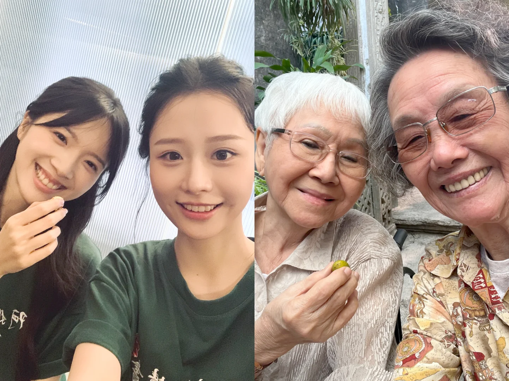
一封侨批，跨越山海，缝补了两个被时代分开的人。
感谢您的聆听，愿每一份深情，都不被岁月辜负。
《给阿嬷的情书》 · 影视深度鉴赏
汇报人：李淼华 孙霂晗 钟雨薇
2026年10月 · 中国武汉